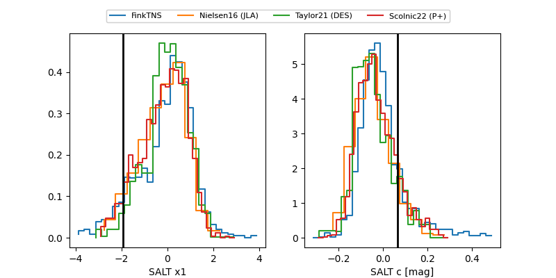

FINK: ZTF25abovamp
Lasair: ZTF25abovamp
ALeRCE: ZTF25abovamp
TNS: 2025wxo
YSE: 2025wxo
ZTF25abovamp (ztf,fink)
2025wxo (tns,yse)
PS25hhv (panstarrs)
equatorial (ra, dec) = (228.0283,+53.64626)
galactic (l, b) = (88.3801,+52.98642)

last ps1::g=19.56, ps1::i=19.59, ps1::r=19.50, ps1::y=19.34, ztfg=19.38, ztfr=19.48
1 ps1::g, 1 ps1::i, 3 ps1::r, 1 ps1::y, 1 ztfg, 1 ztfr detections